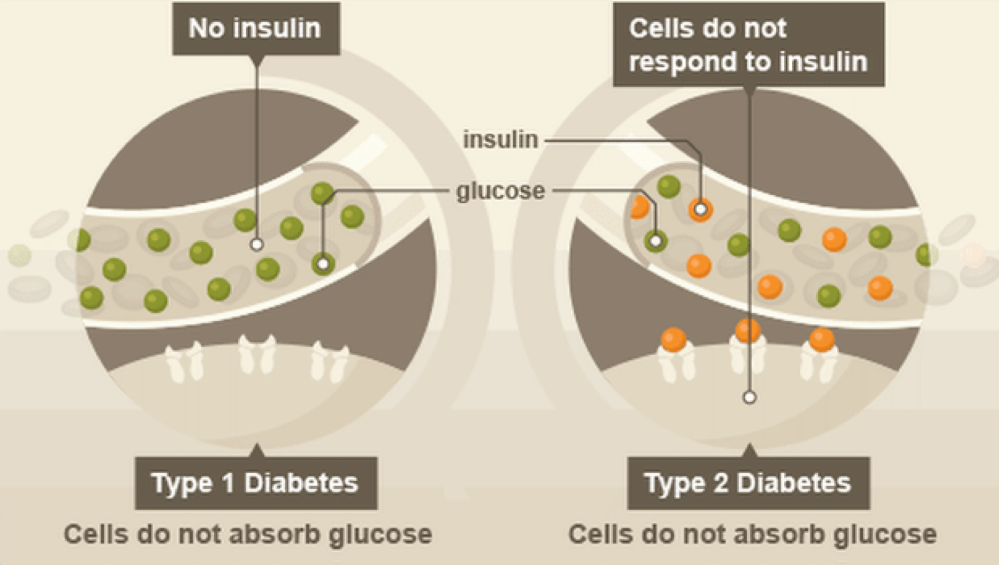
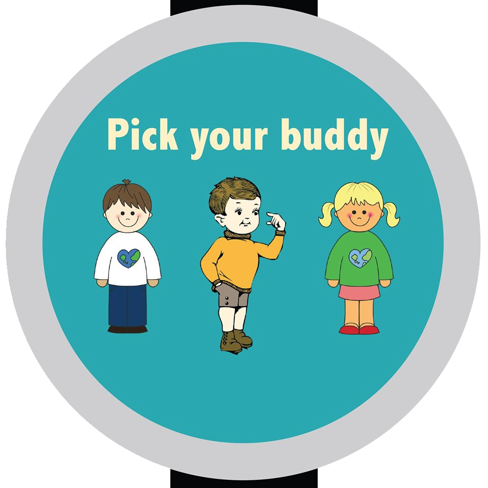
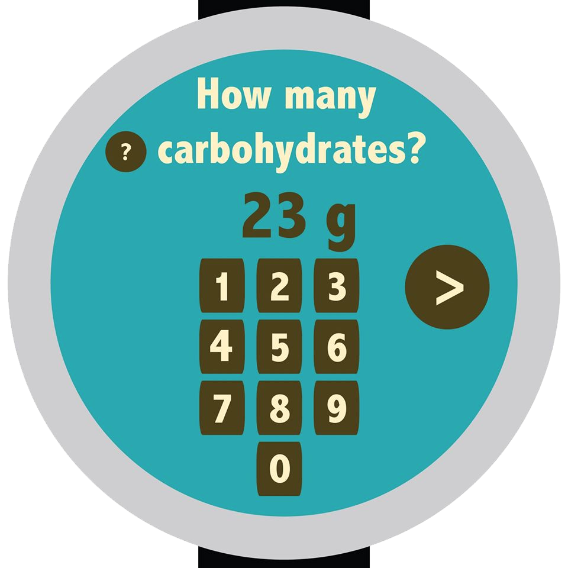
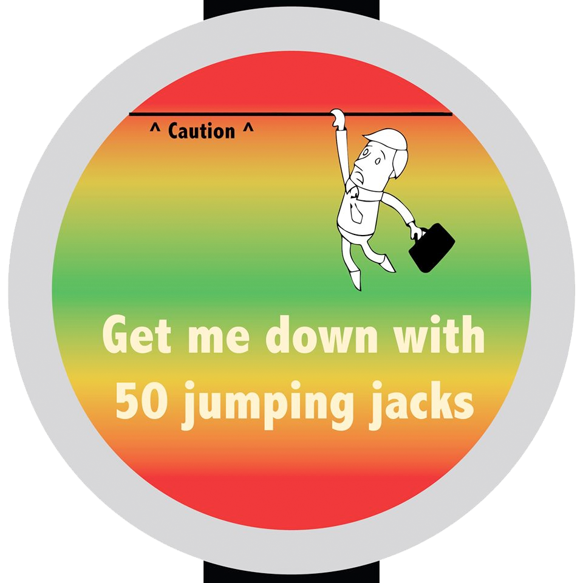

Type 1 Diabetes

Type 1 diabetes is a disease in which the body fails to produce enough insulin, which is required to absorb glucose. While only about 5% of all cases of diabetes are type 1, in 2008-2009, about 80% of youth diagnosed with diabetes had type 1.
About CoDi
With the prevalence of Type 1 Diabetes in children, we decided to make CoDi, a companion living in a watch-like device. The child "feeds" his buddy with the foods he eats in real life, and it will react accordingly, warning him if his blood sugar gets too high or too low.

Grows with your child

With varying levels of granularity in the input, children of all ages can learn to record their meals in the device (while developing good habits to do so in other contexts), starting with inputting set snacks or meals, to reading and understanding the nutrition facts of the foods they eat.
Gamified & Fun
When the device detects that their blood sugar has risen above or fallen below safe levels, it suggests activities which can help, like eating a quick snack or exercising. This way, children take charge of their own health, reporting foods and regulating blood sugar in a fun and rewarding way.
